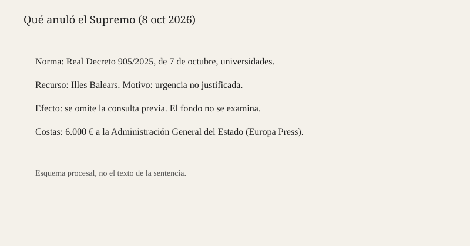

Madrid · Tribunal Supremo · 8 de octubre de 2026
El Supremo anuló el Real Decreto 905/2025 de universidades por una urgencia no justificada

Lo que coinciden las fuentes
El 8 de octubre de 2026 RTVE y Expansión publicaron que la Sala de lo Contencioso-Administrativo del Tribunal Supremo ha anulado el Real Decreto 905/2025, de 7 de octubre, sobre universidades. El recurso lo presentó la comunidad autónoma de las Illes Balears. El motivo no es el contenido de los criterios para crear centros. Es la tramitación. El tribunal concluye que el acuerdo por el que se declaró urgente la elaboración y aprobación del decreto no está debidamente justificado, y que por eso la omisión del trámite de consulta previa carecía del amparo legal. Expansión, citando a Europa Press y una sentencia a la que dice haber tenido acceso, añade que las costas se imponen a la Administración General del Estado en 6.000 euros, y que el tribunal describió la prisa como una voluntad política de entrada en vigor rápida.
RTVE recuerda para qué servía la norma: endurecer los criterios de creación y reconocimiento de universidades y frenar centros privados que, en el lenguaje del Gobierno, no cumplieran un estándar de excelencia. Ese propósito queda descrito, no juzgado. Las dos piezas coinciden en que la Sala no entró en el fondo. Anular por la forma deja el problema de política universitaria donde estaba y quita la norma que intentaba cerrarlo.
Lo que es solo una cita
Llamar al decreto una norma contra “chiringuitos”, como hace el titular de Expansión, es una etiqueta de redacción. No es el fallo. El fallo habla de justificación de la urgencia. La ministra de Ciencia, Innovación y Universidades aparece en la pieza como responsable política del área; ninguna de las dos fuentes reproduce hoy una respuesta suya al fallo. Una voluntad política de aprobar pronto, si esa es la frase de la sentencia, es un hallazgo sobre el expediente, no un juicio sobre si los criterios eran buenos o malos para el estudiante.
El mecanismo que hace falta
Un real decreto —distinto de un real decreto-ley— es un reglamento del Consejo de Ministros. No tiene rango de ley. Se impugna ante la jurisdicción contencioso-administrativa, y el Supremo conoce de los que dicta el Gobierno. El procedimiento de elaboración exige, salvo excepción, una consulta previa a quienes puedan resultar afectados. La excepción de urgencia existe, pero hay que motivarla. Si la motivación no sirve, se cae el atajo y, con él, el reglamento que se aprobó saltándose el trámite. Es un control de forma con efecto de fondo: la norma desaparece aunque nadie haya dicho que el artículo sobre el número de doctores o sobre la investigación fuera ilegal en sí.
Baleares tiene interés porque la autorización de universidades toca competencias compartidas y porque un criterio estatal más duro cambia lo que una comunidad puede reconocer. Estimar su recurso no significa que el tribunal adopte la política universitaria balear. Significa que el expediente estatal no explicó la prisa como exige la ley de procedimiento. Otras comunidades que no recurrieron se benefician igual si la anulación es del decreto entero, que es lo que describen RTVE y Expansión.
La consecuencia práctica es un vacío hasta que el Gobierno rehaga el procedimiento con consulta, o hasta que las Cortes —después del 29 de noviembre— decidan regular por ley. Los expedientes de nuevas universidades privadas que estaban bloqueados por el decreto de 2025 vuelven al marco anterior, salvo que otra norma los cubra. Este dossier no tiene la lista de expedientes. Afirmar que mañana abre una universidad concreta sería inventar un efecto que las piezas no dan.
Conviene no mezclar este fallo con el Real Decreto-ley 29/2026 de vivienda, publicado el día anterior. Uno es un reglamento de 2025 anulado por la forma. El otro es un decreto-ley de 2026 en vigor y pendiente de convalidación. Los dos salen del Consejo de Ministros y los dos usan la palabra urgencia. No son el mismo instrumento ni el mismo pleito. El Supremo no ha dicho hoy nada sobre la vivienda. Quien sume las dos noticias en un “el Gobierno legisla mal” está haciendo un argumento, no una lectura del fallo.
Tampoco es un fallo sobre la libertad de creación de centros en abstracto. La Constitución reconoce la libertad de enseñanza y permite a los poderes públicos organizar el sistema. El decreto intentaba poner condiciones de entrada. El tribunal no ha dicho que esas condiciones excedan la ley de universidades. Ha dicho que no se pudo llegar a ellas por el camino elegido. Un segundo decreto, con consulta previa y el mismo articulado, podría volver a la Sala por el fondo. Ese recurso no existe todavía.
Lo que la noticia no es
No es una sentencia sobre la calidad de las universidades privadas. No es la dimisión de una ministra. No es una fotografía de la deliberación: la imagen es la fachada en 2014. El esquema inferior resume el objeto, el recurrente, el motivo y las costas citadas. No reproduce fundamentos jurídicos.

Artículos de origen y puntuaciones
RTVE separa el fallo de forma y el propósito de la norma. Expansión acierta en costas y en la cita de la voluntad política, y el titular “chiringuito” carga un término que la sentencia no necesita. Moncloa.com no es La Moncloa; es un digital que resume el mismo fallo y añade lectura. La complicidad baja cuando el apodo del decreto se presenta como el hecho.